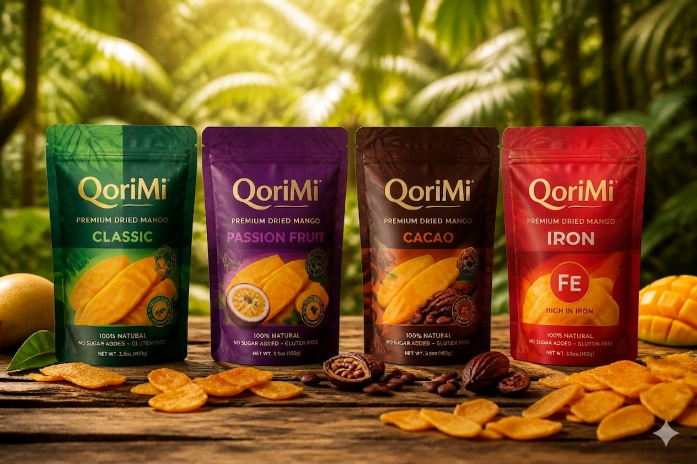
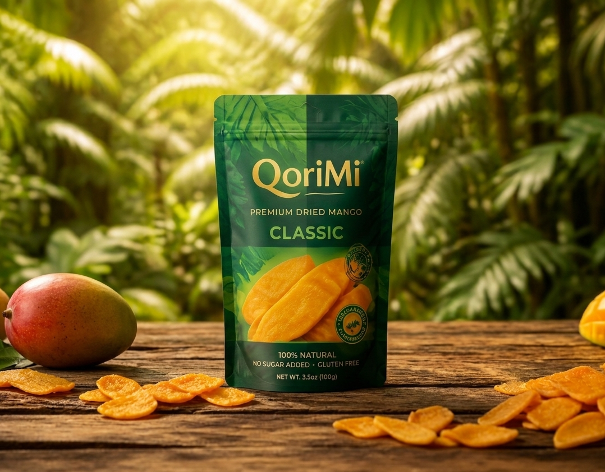
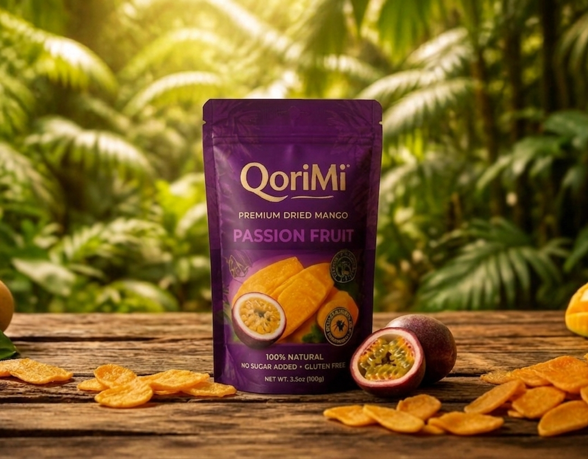
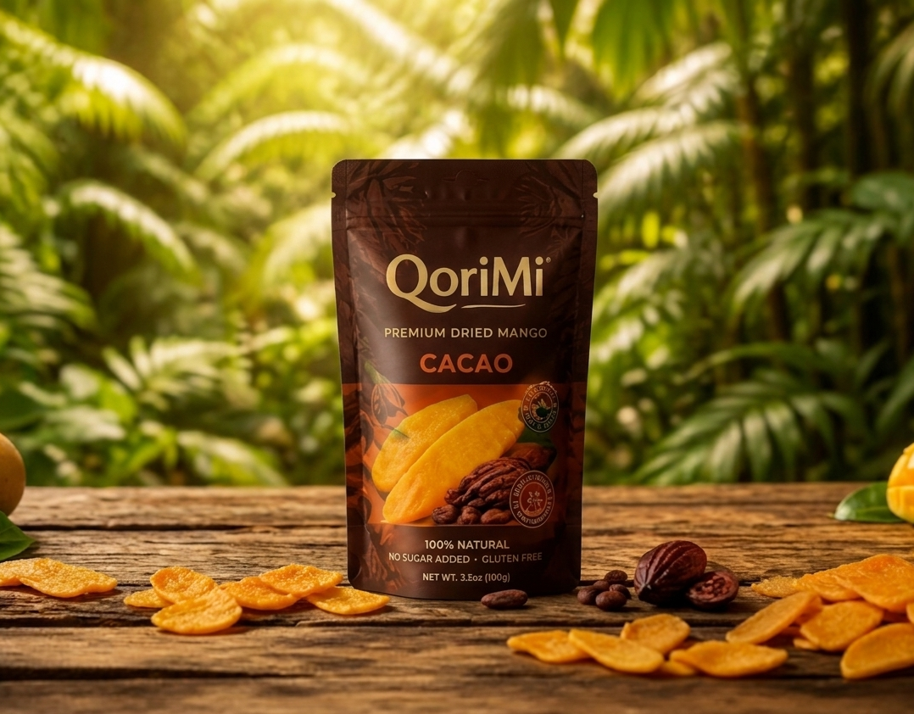
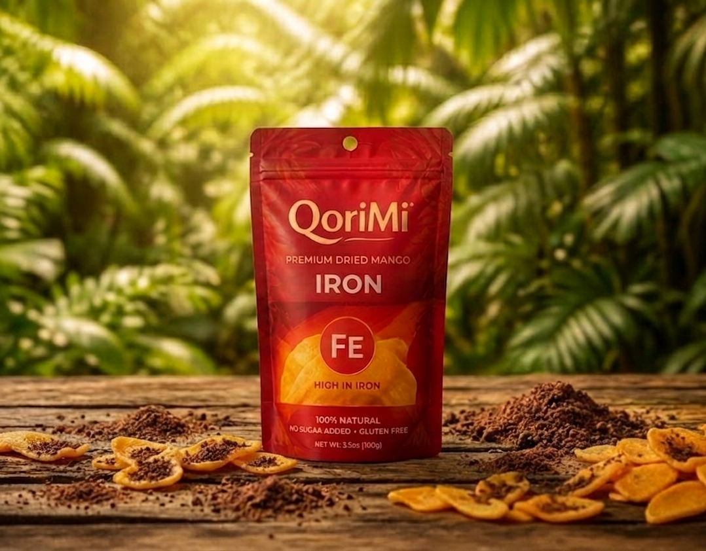
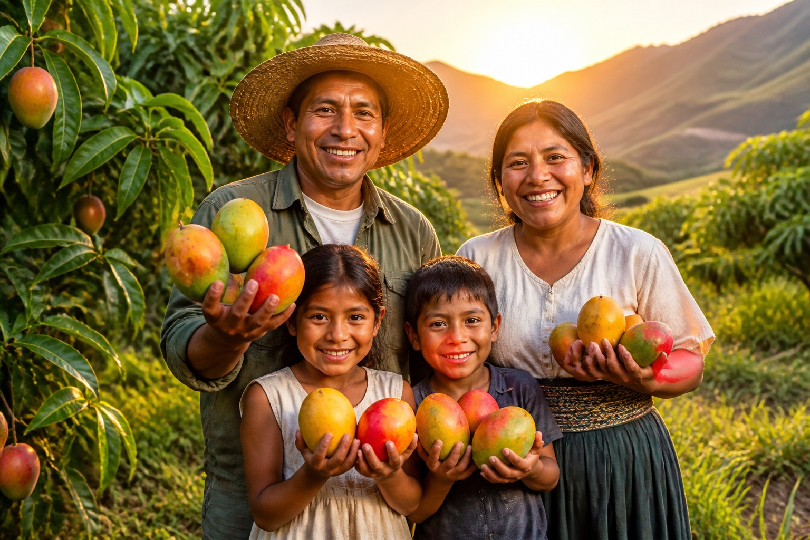

3
Sabores unicos
Mango peruano deshidratado con sabores inspirados en la biodiversidad del pais.
Saludable, practico y listo para exportar.
Sabores unicos
Azucar anadida
Regiones productoras
Natural

Con sabores inspirados en la biodiversidad del Perú. Saludable, practico y listo para exportar.
Rico en hierro, fibra, vitamina A y C, fuente natural de energia y antioxidantes. Un snack nutritivo que contribuye al bienestar diario.
Piura, Lambayeque, Cajamarca, La Libertad, Amazonas y Tumbes.
Proceso artesanal con estandares internacionales de calidad.
Rico en hierro, fibra, vitamina A y C. Fuente natural de energia y antioxidantes.
Bolsa stand-up hermetica premium, atractiva y sostenible.
NUTRITIVO Y FUNCIONAL - Rico en hierro, fibra, vitamina A y C, fuente natural de energia y antioxidantes. Contribuye al bienestar diario.
Cuatro variedades con propositos distintos para consumidor gourmet y social.
QoriMi
Enfoque: Estilo de vida saludable, mercados retail selectos y exportacion.
Iron Chips
Enfoque: Salud publica, lucha antianemia y programas del Estado.

PE 100% PeruanoEl sabor puro del mango peruano deshidratado. Dulce, fibroso y 100% natural.

PE 100% PeruanoLa combinacion tropical de mango y maracuya peruanos. Agridulce, vibrante y refrescante.

PE 100% PeruanoMango premium fusionado con cacao nativo peruano. Audaz, antioxidante y unico.

PE 100% PeruanoMango chips enriquecido con hierro heminico (polvo de sangrecita). La vitamina C del mango triplica la absorcion del hierro. Snack crujiente para ninos en edad escolar.
Una estrategia multimodal enfocada en consumidor saludable y mercado internacional.
Inversion enfocada en deshidratacion eficiente, validacion rapida del producto, escalabilidad y posicionamiento de marca internacional sin infraestructura hipercompleja.
Compra de mango fresco e insumos (cacao, maracuya)
Bolsas Pouch premium y etiquetado
Consumo energetico de los deshidratadores
Inversion en marketing digital y anuncios
